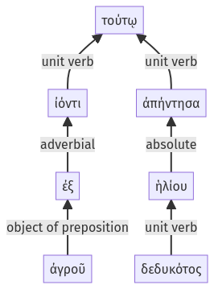

Lysias, Oration 1, 1.22.33-1.22.39a
1.22.27-1.22.32a | 1.23.1-1.23.13a
Sentence 61
1.22.33-1.22.39a
τούτῳ ἡλίου δεδυκότος ἰόντι ἐξ ἀγροῦ ἀπήντησα.
2 ἡλίου δεδυκότος
2 ἰόντι ἐξ ἀγροῦ
1 ἀπήντησα
τούτῳ ἡλίου δεδυκότος ἰόντι ἐξ ἀγροῦ ἀπήντησα.
Highlighting:
- connecting words
- unit verb
- subject
- object
Color code:
- Independent clause (level 1, transitive verb)
- circumstantial participle (level 2, intransitive verb)
- circumstantial participle (level 2, intransitive verb)
